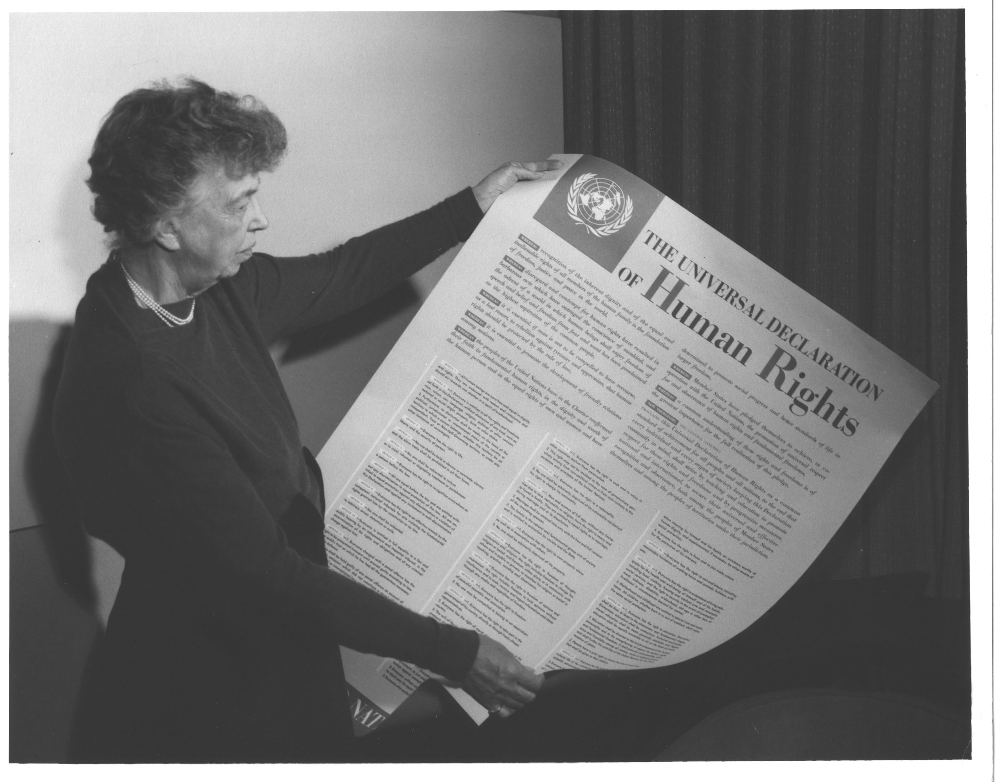
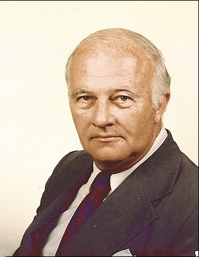
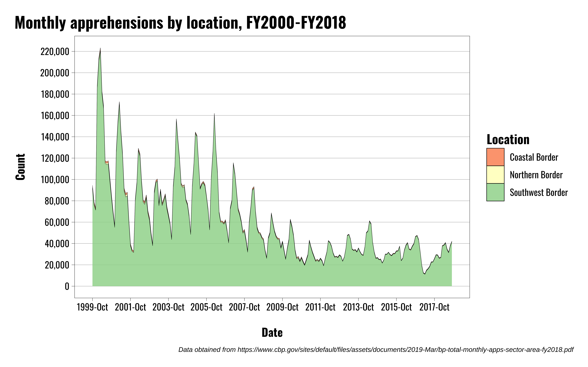

| Category | Total Agreements | Total Ratified |
|---|---|---|
| International Bill of Human Rights | 4 | 1 |
| Prevention of discrimination on the basis of race, religion, or belief; and protection of minorities | 1 | 1 |
| Women's Rights | 5 | 0 |
| Slavery | 4 | 1 |
| Torture and Ill-treatment | 4 | 1 |
| Children's rights | 3 | 2 |
| Freedom of association | 2 | 0 |
| Employment and forced labor | 7 | 1 |
| Education | 1 | 0 |
| Refugees and asylum | 2 | 0 |
| Nationality and statelessness | 2 | 0 |
| War crimes and genocide | 3 | 1 |
| Law of armed conflict | 6 | 4 |
| Terrorism and human rights | 5 | 5 |
| Total | 49 | 17 |
| Note: Data obtained from University of Minnesota Human Rights Library http://hrlibrary.umn.edu/research/ratification-USA.html |
US Foreign Policy
Human Rights Issues
Michael Flynn
Professor
Department of Political Science
011C Calvin Hall
meflynn@ksu.edu
2025-12-03
Key Questions
How have theory and history shaped the place of human rights in US foreign policy?
How do human rights issues intersect with other policy areas?
What are the difficulties associated with humanitarian intervention?
What are some of the pressing human rights issue in the world today?
Historical Overview
Historical Overview
Origins of US human rights policy
Classical liberalism
Abolitionist movement
Laws of war
Women’s rights movement
Historical Overview
United Nations Universal Declaration of Human Rights
Provides an explicit listing of human rights to which all human beings are entitled
Also reflects ideas and rights with origins in a wide range of cultural and religious traditions
To right: Eleanor Roosevelt, Chair of the UN Human Rights Commission

Historical Overview
- Life, liberty, and security of person
- No slavery or forced servitude
- No torture, cruel and unusual punishment, inhuman or degrading treatment
- Recognition as a person before the law
- Equal protection before the law
- Right to effective remedy by national tribunals
- No arbitrary arrest or punishment
- Fair and public hearings by an independent and impartial tribunal
- Presumed innocence until guilt is proven
- Protection from arbitrary interference in an individual’s private, family, or home life, and in personal correspondence
- Freedom of movement, both within and between countries
- Freedom from persecution and access to asylum
- Right to a nationality and to change nationality
- Freedom of consensual marriage and to raise a family
- Right to own property
- Freedom of thought, conscience, and religion
- Freedom of opinion and expression
- Freedom of peaceful assembly and association
- Freedom of political participation and assembly
- Access to essential economic, social, and cultural rights necessary for individual development and dignity
- Right to work, without discrimination, for fair pay, and in favorable conditions
- Right to join trade unions
- Right to rest, leisure, and limited working hours
- Access to basic standards of living, including healthcare, food, clothing, and housing
- Right to equally partake in the cultural and scientific life of the community
- Right to enjoy a social and international order that facilitates the realization of these rights
- Limitations on these rights only to the extent that they are necessary to secure the ability of others to enjoy their rights
- Nothing in the UNDHR will be interpreted as a license to destroy or harm the freedoms outlined herein
Historical Overview
Human Rights Treaties and Covenants
The Universal Declaration is a general list with broad recognition, but it’s not binding in any way
Actual implementation and practice is a different story
There are several treaties that actually involve countries committing to protect various rights in a substantive way
This means ensuring that domestic political institutions and laws align with international human rights law
This is where the rubber meets the road
Historical Overview
Overall US Engagement with Human Rights Regime:
The US was central to the creation of the modern human rights regime, but doesn’t always embrace it
United States has a poor track record when it comes to ratifying human rights treaties
US has signed 23 of 49 total agreements
It’s only ratified 17 of 49 agreements
Institutionalizing Human Rights
Institutionalizing Human Rights
Domestic roadblocks to human rights
US is championing international human rights, but there are domestic roadblocks
Much of this effort conflicts with treatment of minority Americans at home
Segregation at home is threatened by international institutions that can enforce human rights agreements
To right: James Byrnes, Secretary of State 1945-1947

Institutionalizing Human Rights
Bricker Amendment
Really a series of amendments
First, introduced by Senator John Bricker (R-OH)
Two key parts
- No treaties can conflict with the Constitution (Duh)
- Strips the president of the power to negotiate executive agreements (Oh…)
To right: Senator John Bricker

Institutionalizing Human Rights
Humphrey-Cranston Amendment (Section 502B of the 1974 Foreign Assistance Act):
Except under extraordinary circumstances no security assistance may be provided to any country the government of which engages in a consistent pattern of gross violations of internationally recognized human rights, including torture or cruel, inhuman or degrading treatment or punishment, prolonged detention without charges, causing the disappearance of persons by the abduction and clandestine detention of those persons or other flagrant denials of the right to life, liberty, and the security of the person.
Institutionalizing Human Rights
Harkin Amendment (Section 116 of the Foreign Assistance Act of 1974):
No assistance may be provided under this part to the government of any country which engages in consistent pattern of gross violations of internationally recognized human rights, including torture or cruel, inhuman, or degrading treatment or punishment, prolonged detention without charges, or other flagrant denial of the right to life, liberty, and the security of person, unless such assistance will directly benefit the needy people in such country.”
Institutionalizing Human Rights
Assistant Secretary of State for Human Rights and Humanitarian Affairs
Position created in 1976
Raised profile of human rights issues in State Department
Began practice of drafting annual country reports on human rights performance
To right: James M. Wilson, first Assistant Secretary of State for Human Rights and Humanitarian Affairs

Institutionalizing Human Rights
Undersecretary of State for Civilian Security, Democracy, and Human Rights
Position created in 2012
Replaced Undersecretary for Global Affairs and Democracy
First elevation of human rights in State Department since 1976
To right: Maria Otero, first Undersecretary of State for Civilian Security, Democracy, and Human Rights
Trends in Human Rights
Trends in Human Rights
Torture: Purposeful inflicting of extreme pain, whether mental or physical, by government officials or by private individuals at the instigation of government officials
Political Imprisonment: The incarceration of people by government officials because of: their speech; non-violent opposition to government policies or leaders; religious beliefs; non-violent religious practices including proselytizing; or their membership in a group, including an ethnic or racial group
Extrajudicial Killings: Killings by government officials without due process of law. They include murders by private groups if instigated by the government. These killings may result from the deliberate, illegal, and excessive use of lethal force by the police, security forces, or other agents of the state whether against criminal suspects, detainees, prisoners, or others.
Disappearance: Cases in which people have disappeared, political motivation appears likely, and the victims have not been found. Knowledge of the whereabouts of the disappeared is, by definition, not public knowledge. However, while there is typically no way of knowing where victims are, it is typically known by whom they were taken and under what circumstances.


Current Issues
Current Issues
The US is routinely cited for lots of different issues, but some of the most common and/or big ones that pertain to foreign policy are:
- The War on Terror
- Torture
- Extrajudicial Killings
- Extraordinary rendition program
- Drone strikes
- Military interventions and Responsibility to Protect
- Security assistance to allies and proxies
- Drug Trafficking
- Migrant communities
- Refugees and asylum seekers
- Family separations
Human Rights and the War on Terror
Major issues:
Torture of individuals suspected of, or linked to, terrorist activity
Indefinite imprisonment of suspects in Guantanamo Bay, Cuba
CIA black sites and rendition program
Drone strikes and civilian casualties
Human Rights and the War on Terror
Anwar al-Awlaki
A prominent leader of al-Qaeda forces in Yemen
Assassinated by a US drone strike in Yemen on September 30, 2011
He was an American-born US citizen
So was his 16 year old son, who was killed by a drone strike two weeks later
Raises issues of due process and the boundaries between citizens, civilians, and enemy combatants
Human Rights and Military Intervention
Responsibility to Protect (R2P):
Calls for other nation states to ensure fundamental human rights are respected around the world
Fundamental question: Can military intervention stop human rights abuses and/or improve conditions on the ground?
The results aren’t great
Military intervention can worsen human rights abuses
Post-conflict reconstruction is really, really complicated
To right: August 2014 protests in Libya after Libyan Parliament voted to request UN intervention, three years after the NATO invervention that toppled the Gaddafi regime.
Human Rights and Security Assistance
Human Rights and Drug Trafficking
Drug Trafficking
Trump Administration began using GWOT tactics on alleged drug traffickers
Issues in question:
- Targeting civilian vessels operating in international waters
- Due process
- Violations of military and international laws of war
- Freedom of movement
- Cruel and unusual punishment
To right: Photo of a boat recently struck by US missiles. Photo obtained from the BBC via Defense Secretary Hegseth’s X account.
Human Rights and Immigration, Asylum, and Refugees
US offers to let in people who may be persecuted in their home countries.
Groups are classified as one of two types.
- Asylum Seekers
- Refugees
Trump Administration has sought to reduce access across the board, including general immigration, asylum seekers, and refugees
Refugees and Asylum seekers are been particular targets
Human Rights and Immigration, Asylum, and Refugees
So what do these terms mean?
Refugee According to 8 U.S. Code § 1101(a)(42)(A)
Any person who is outside their home country and who is unable or unwilling to return to that country because of persecution or a well-founded fear of persecution on account of race, religion, nationality, membership in a particular social group, or political opinion.
Asylum
Meet criteria for refugee status, but apply after they are in the United States, or at a port of entry.


Human Rights and Immigration, Asylum, and Refugees
Large focus on Southwest Border
This is the border between the US and Mexico
Trump campaigned in 2015-2016 on cutting down on migration from Mexico and central America, claiming broad patterns of violence and crime for which there’s little evidence
Escalated existing deterrence strategies employed by previous administrations to reduce migration
But what does it take for deterrence to work?
- Is the threat credible?
- What is the cost-benefit calculus of immigrants?



Human Rights and Immigration, Asylum, and Refugees
Mass Deportations
- Federal enforcement
- Deportation to third-party countries
- Due process violations
- Torture

Human Rights and Immigration, Asylum, and Refugees
Child separations
First Trump Administration instituted policy to separate children from their parents when they’re apprehended
Did previous presidents do this, too?
Yes, though Not as a systematic policy tool:
- Children could be separated from parents when parents were criminally charged after apprehension or where officers suspected human trafficking
- Trump administration instituted a “zero-tolerance” policy, meaning all unlawful entrants will be systematically subject to criminal prosecution.
- Systematically charging unlawful entrants with a crime means children are then treated as unaccompanied minors
- This meant that individuals would be detained, and if they were accompanied by children, those children would be detained separately from parents.
- Obama Administration housed women and children together while cases were pending. Families could be detained indefinitely.